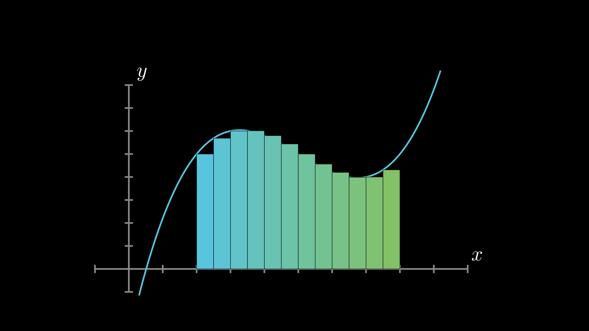

Graph Scene¶
-
class
manimlib.scene.graph_scene.GraphScene(**kwargs)¶ Type:
SceneCONFIGparameters"x_min": -1, "x_max": 10, "x_axis_width": 9, "x_tick_frequency": 1, "x_leftmost_tick": None, # Change if different from x_min "x_labeled_nums": None, "x_axis_label": "$x$", "y_min": -1, "y_max": 10, "y_axis_height": 6, "y_tick_frequency": 1, "y_bottom_tick": None, # Change if different from y_min "y_labeled_nums": None, "y_axis_label": "$y$", "axes_color": GREY, "graph_origin": 2.5 * DOWN + 4 * LEFT, "exclude_zero_label": True, "num_graph_anchor_points": 25, "default_graph_colors": [BLUE, GREEN, YELLOW], "default_derivative_color": GREEN, "default_input_color": YELLOW, "default_riemann_start_color": BLUE, "default_riemann_end_color": GREEN, "area_opacity": 0.8, "num_rects": 50,
-
get_graph(func, color=None, x_min=None, x_max=None)¶ - Parameters
func (Function) -- This function must be continuous
color (Hexadecimal color) -- Color
x_min (float) -- TODO
x_max (float) -- TODO
-
get_riemann_rectangles(graph, x_min=None, x_max=None, dx=0.1, input_sample_type='left', stroke_width=1, stroke_color='#000000', fill_opacity=1, start_color=None, end_color=None, show_signed_area=True, width_scale_factor=1.001)¶ Riemman rectangles.
- Parameters
graph (VMobject) -- Graph from
get_graphx_min (float) -- TODO
x_max (float) -- TODO
dx (float) -- TODO
input_sample_type (str) -- Can be
"left","center","right"
-
get_riemann_rectangles_list(graph, n_iterations, max_dx=0.5, power_base=2, stroke_width=1, **kwargs)¶ - Parameters
graph (VMobject) -- Graph from
get_graphn_iterations (int) -- TODO
max_dx (float) -- TODO
power_base (int) -- TODO
-
setup()¶ This is meant to be implement by any scenes which are comonly subclassed, and have some common setup involved before the construct method is called.
-
Riemann rectangles¶
class RiemannRectangles(GraphScene):
CONFIG = {
"y_max": 8,
"y_axis_height": 5,
}
def construct(self):
self.setup_axes()
def func(x):
return 0.1 * (x + 3-5) * (x - 3-5) * (x-5) + 5
graph=self.get_graph(func,x_min=0.3,x_max=9.2)
riemann_rectangles=self.get_riemann_rectangles(
graph,
x_min=2,
x_max=8,
dx=0.5
)
self.add(graph,riemann_rectangles)
Riemann rectangles animation¶
class RiemannRectanglesAnimation(GraphScene):
CONFIG = {
"y_max": 8,
"y_axis_height": 5,
"init_dx":0.5,
}
def construct(self):
self.setup_axes()
def func(x):
return 0.1 * (x + 3-5) * (x - 3-5) * (x-5) + 5
graph=self.get_graph(func,x_min=0.3,x_max=9.2)
kwargs = {
"x_min" : 2,
"x_max" : 8,
"fill_opacity" : 0.75,
"stroke_width" : 0.25,
}
flat_rectangles = self.get_riemann_rectangles(
self.get_graph(lambda x : 0),
dx=self.init_dx,
start_color=invert_color(PURPLE),
end_color=invert_color(ORANGE),
**kwargs
)
riemann_rectangles_list = self.get_riemann_rectangles_list(
graph,
6,
max_dx=self.init_dx,
power_base=2,
start_color=PURPLE,
end_color=ORANGE,
**kwargs
)
self.add(graph)
# Show Riemann rectangles
self.play(ReplacementTransform(flat_rectangles,riemann_rectangles_list[0]))
self.wait()
for r in range(1,len(riemann_rectangles_list)):
self.transform_between_riemann_rects(
riemann_rectangles_list[r-1],
riemann_rectangles_list[r],
replace_mobject_with_target_in_scene = True,
)
self.wait()